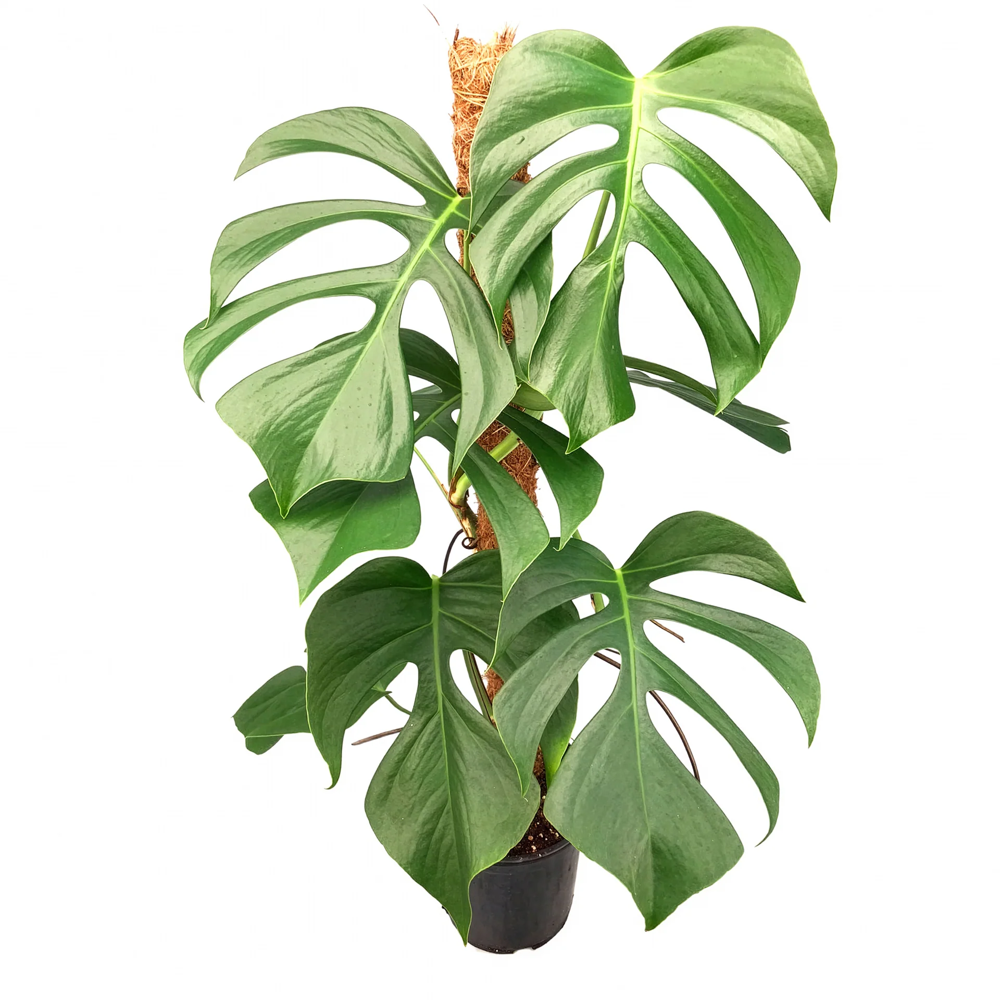
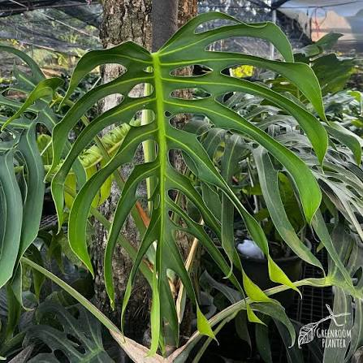

Monstera Sierrana
This is my youngest monstera plant, the Monstera deliciosa var. sierrana,also grown from a cutting. It might also be my rarest, even though the distinguishing factors aren't noticable to most people. I'm not sure what makes an expensive plant worth its price, but I think that is subjective and different for each person. This cutting was listed aroun $700 but marked down to $45 on clearance. This was from the same vendor as my esqueletos, and I didn't see this version listed anywhere else, so I bought it.
This variant takes longer to mature and has a different pattern of leaf perforations than your typical M. deliciosa. I have since propgated one cutting into several small plants. Recently I combined these together into a 10" pot in order to stake them. I am hoping when my new stakes come in that it will take root and mature a bit faster.


Sierrana Stats
| Native Range | Mexico |
|---|---|
| Growth Habit | Climbing Hemiepiphyte |
| Growth Rate | Slow to Moderate |
| Fenestration | Deep marginal splits and interior holes |
| Mature Leaf Size | 18 to 30 in. or more |
| Time to Mature Foliage | Approx. 3-5 years |
Why All the Naming Confusion?
Monstera deliciosa var. sierrana was originally described in 1965 from plants collected in the Sierra de Juárez of Oaxaca, Mexico. Although it was formally named as a variety of M. deliciosa, modern botanical classifications generally include it within the highly variable species Monstera deliciosa rather than recognizing it as a separate variety. Despite this, Sierrana remains a recognizable and sought-after form in horticulture, where plants descended from this distinctive population are still cultivated under the historic name.
The differences become most apparent as the plant matures. Compared with a typical M. deliciosa, Sierrana develops smaller leaves with unusually deep divisions that extend close to the midrib, creating narrow, rib-like sections of leaf tissue. Its mature leaves also tend to have fewer internal perforations and a more open, skeletal appearance, while typical M. deliciosa produces much broader lobes and can develop several rows of fenestrations. These traits give mature Sierrana a distinctive appearance even though it is currently considered part of the same botanical species.
